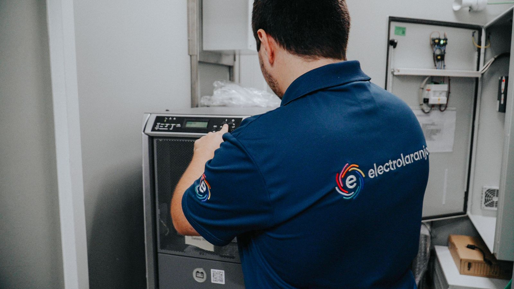

Um agente de texto que responde no WhatsApp e no email a qualquer hora, sabe quem é o cliente e o que ele quer, e deixa a tarefa à pessoa certa. E um agente de voz para as chamadas que hoje ficam sem resposta. A vossa equipa continua a atender como sempre.

O cliente liga e ninguém fica com registo de quem ligou, com quem queria falar nem qual era o assunto.
"O colega está na hora de almoço, ele liga-lhe." E ninguém devolve a chamada.
Cada vez que volta a ligar, explica outra vez quem é e o que quer. A reclamação cresce a cada tentativa.
Muitos da lavoura e da pesca, com pouca paciência para repetir. Por isso: nada de começar 100% com uma máquina.
"Ninguém retorna a chamada. (...) Eu quero ter um board onde diga assim: olhe, o cliente tal ligou e quer falar com este elemento."Tércio Costa, na reunião de 9 de outubro
Quatro situações do vosso dia a dia: uma chamada perdida, uma avaria fora de horas, um cliente novo e um pedido de documento. Veja o que o agente responde e porquê.
Simulação com clientes, datas e pedidos ilustrativos. Em produção, o que o agente consegue consultar (stock, orçamentos, encomendas) depende da ligação ao Primavera pelo módulo de API.
Cada contacto, por telefone, WhatsApp ou email, fica com dono, assunto e histórico. No email, o agente pode começar por deixar rascunhos para a equipa aprovar antes de enviar.
Ninguém volta a perguntar ao Sr. António quem é nem o que quer.
Bom dia, Rui.
Temos 4 disponíveis na loja e os outros 2 chegam com a próxima encomenda ao fornecedor. Se quiser, deixamos já os 4 reservados em seu nome e avisamos assim que chegarem os restantes.
Cumprimentos,
Electrolaranjo
Exemplos ilustrativos. Onde fica o painel de tarefas (no Neotriade, na vossa plataforma ou noutra) decide-se na conversa sobre a plataforma.
A Bia é o nosso agente de voz. A forma mais honesta de avaliar a qualidade é ligar e falar com ela, de preferência com a pessoa da equipa com o sotaque mais difícil de perceber.
Faça de conta que é um cliente que nunca ouviu falar de nós e explique o que precisa.
A equipa atende como hoje. O agente entra quando ninguém atende: atende ao fim de 15 a 20 segundos (a validar tecnicamente) ou liga de volta logo a seguir.
Em vez do menu de teclas, o agente pergunta o que o cliente precisa e encaminha para a pessoa certa.
O agente não tem limite de conversas. Quantas linhas entram e saem em simultâneo é o que contratarem com a NOS.
O feedback é simples: ouvem a gravação ou leem o resumo e dizem-nos o que corrigir. É assim que o agente melhora de semana para semana.
Todo o WhatsApp da empresa centralizado, com várias pessoas a atender e a gestão a ver tudo.
Agente de atendimento em três canais, com a equipa a ficar só com o que precisa de uma pessoa.
Mais de 20 escolas com atendimento automático em vários canais, sem contratar mais pessoas.
Os clientes que mais reclamam são, nas palavras do Tércio, "clientes com muita disponibilidade financeira e que dão-nos muito trabalho". Basta não perder um deles por falta de resposta.
Responde a qualquer hora, identifica o cliente, faz as perguntas obrigatórias e cria as tarefas. No email, começa com rascunhos para aprovarem.
Custos de utilização e manutenção do agente.
Atende quando ninguém atende ou liga de volta, faz as perguntas obrigatórias, passa a uma pessoa quando é preciso e deixa gravação, transcrição e resumo.
Cada minuto tem um custo tabelado pela plataforma de voz, mais a nossa manutenção. Fechamos o valor com os dados da central da NOS.
Três passos até arrancarmos. Nada começa sem confirmar por escrito.
Ao agente de texto, ao de voz ou aos dois, por WhatsApp ou por email.
O documento com o âmbito, os valores e as condições desta página, para assinar.
O módulo de API do Primavera, o email e o WhatsApp, as perguntas obrigatórias e, para o agente de voz, os dados da central da NOS.
Manuel Condeço, AI Solutions
964 251 889 ou manuel.condeco@aisolutions.pt